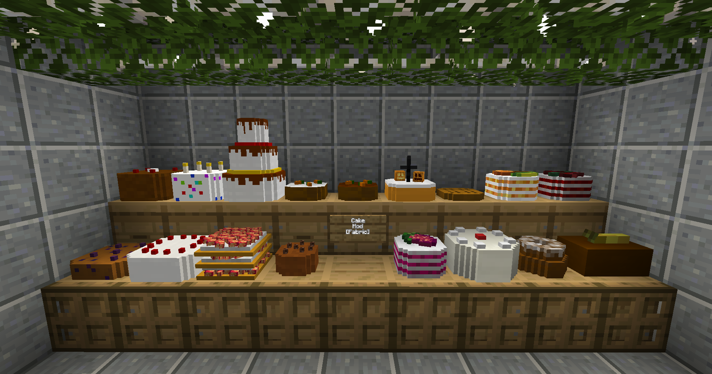

A selection of cakes!
Featuring the Birthday Cake, Wedding Cake etc..!



This Mod adds more cakes to the game!
The Cake Mod adds a lot more cakes to Minecraft
Most Cakes require the Mod Croptopia to be installed!
Featuring the Birthday Cake, Wedding Cake etc..!
-> Yes, the Fabric API is required!
-> For some Cakes, you'll need Croptopia
-> No, the mod is discontinued!
I do not plan on fixing any bugs related to this mod!
-> No, there won't be any updates!